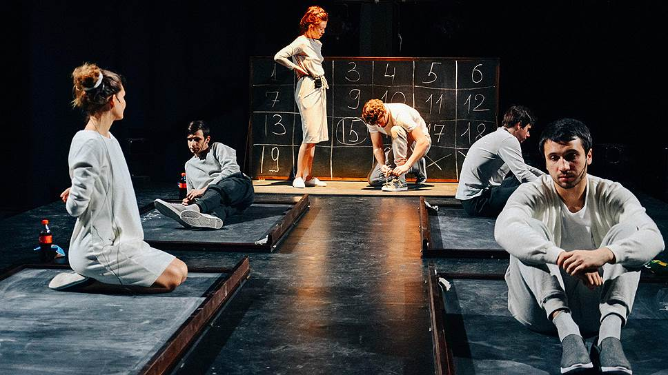

Молодежный центр "Среда"

18 декабря
В молодежном центре «Среда» (ул. Большая Пушкарская, д. 32) молодежь пыталась убрать «четвертую стену», между актёрами и зрителем, и показать новый экспериментальный театр. «Театр пола», которым руководит Могучев Д., строит всё театральное действие на импровизации: зрители рассказывают истории, отвечают на вопросы ведущего – актёры тут же создают ситуации и проигрывают ее. Все выступления проходят под импровизированную музыку.
«Продвигать новый формат театрального зрелища - сложно, но интересно» - говорят участники и руководитель проекта.
В молодежном центре «Среда» (ул. Большая Пушкарская, д. 32) молодежь пыталась убрать «четвертую стену», между актёрами и зрителем, и показать новый экспериментальный театр. «Театр пола», которым руководит Могучев Д., строит всё театральное действие на импровизации: зрители рассказывают истории, отвечают на вопросы ведущего – актёры тут же создают ситуации и проигрывают ее. Все выступления проходят под импровизированную музыку.
«Продвигать новый формат театрального зрелища - сложно, но интересно» - говорят участники и руководитель проекта.